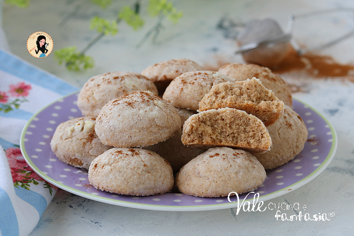
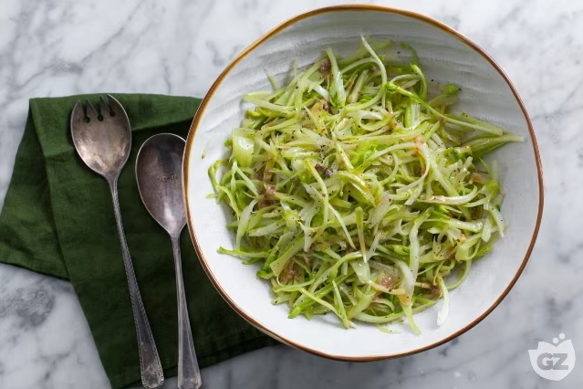

La pasta col tonno di Bello Figo Gu
Scopri questa rivisitazione gourmet di un classico della cucina italiana, grazie all'esperienza di uno chef particolarmente versato nell'arte del $wag
Pubblicato il 12/07/2018

Biscotti alle mandorle
Belli cr0ccanti giuro non sono avvelenati
Pubblicato il 05/11/2021

Puntarelle alla romana
Una ricetta fresca, facile e veloce per far impazzire tutti i palati
Pubblicato il 19/01/2023

Spaghetti cacio e pepe
Mamma mij e che cremin mmmmmmh
Pubblicato il 20/03/2015